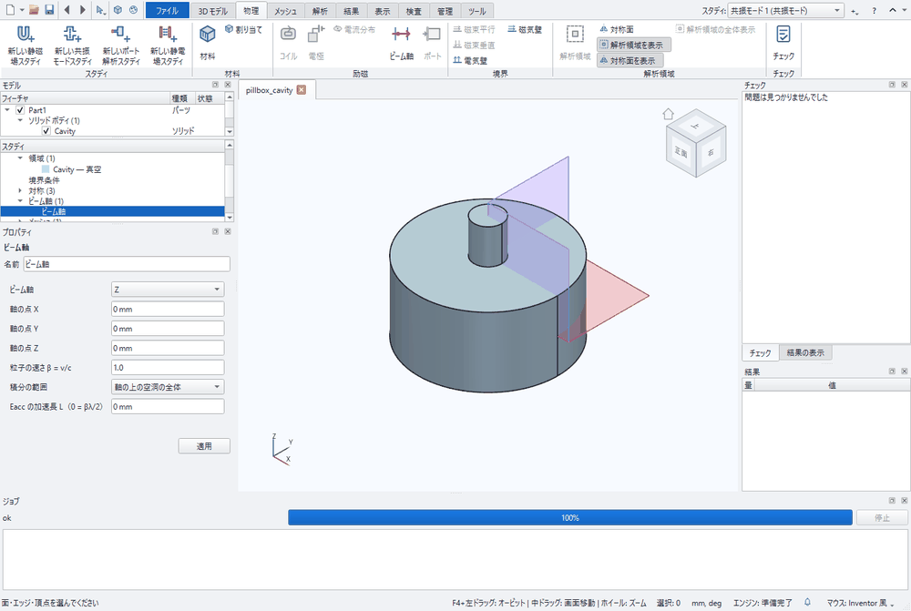
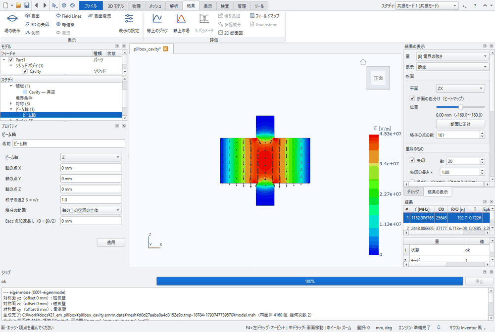
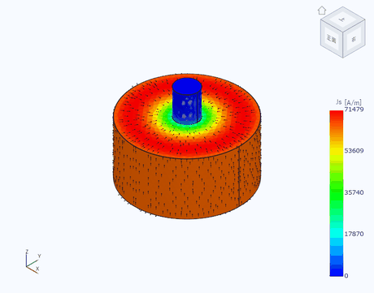
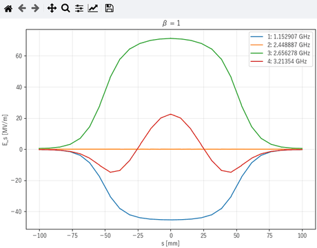

第 21 章
共振モード解析
共振モード この章では、加速空洞などの共振モード（固有モード）を求めるスタディを説明します。形状とスタディ、材料と壁、対称面の選び方、解析の設定とビーム軸、モード表と加速器の指標、表面電流と軸上の場です。題材は examples/pillbox_cavity.emrm（ビームパイプ付きのピルボックス空洞）です。
21.1 共振モードのスタディ
計算は Cav3D-Studio の 3 次元共振モード解析（2 次の曲線 Nédélec 要素、shift-invert の固有値計算）と同じです。周波数・無負荷 Q に加えて、ビーム軸の上の加速電圧・走行時間因子・R/Q・シャント インピーダンス・表面の最大の場の比を求めます。
形状は空洞の内側（真空）をボディで作ります。ボディの外面が導体の壁になります（金属の厚みは作りません）。ビームパイプは空洞のボディに結合します。パイプの端の面も壁になります（遮断周波数より低いモードでは影響しません）。
リボンの［物理］タブ → ［スタディ］パネル → ［新しい共振モードスタディ］で作ります。最初から材料「真空」・メッシュ・解析の設定・ビーム軸が入っています。静磁場と違って、解析領域（空気）はありません。
スタディのブラウザのフォルダは、材料・領域・境界条件・対称・ビーム軸・メッシュ・解析の設定・結果です。共振モードでは、［電気壁］・［磁気壁］・［ビーム軸］・［軸上の場］・［表面電流］が押せます。


21.2 材料と壁
| 項目 | 内容 |
|---|---|
| 材料 | 真空（割り当てていないボディ）と誘電体（比誘電率 εr・比透磁率 μr・誘電正接 tanδ）。誘電体の損失は摂動で Q に入れます（一様な充填なら Q_diel = 1/tanδ） |
| 壁（既定） | ボディの外面のうち、面の条件と対称面の切り口でない面。導体の壁（E の接線成分 = 0）で、損失は解析の設定の壁の損失で決めます |
| 電気壁（E-short） | 選んだ面で n×E = 0（電場は面に垂直）。壁と同じ拘束ですが、損失を数えません（対称面に使います） |
| 磁気壁（M-short） | 選んだ面で n×H = 0（磁場は面に垂直） |
| 対称面 | XY・YZ・ZX 面でモデルを切り、切り口を電気壁か磁気壁にします（既定は磁気壁） |
対称面の選び方
対称面の組み合わせで、求まるモードが変わります（求まるのは、その対称を持つモードだけです）。加速モード TM010 のときは、次のようにします。
ビーム軸を含む面 → 磁気壁（E は面に沿い、H は面に垂直）。
ビーム軸に垂直なセルの中央の面 → 電気壁（E は面に垂直、H は面に沿う）。ここを磁気壁にすると、TM010 は求まりません。
21.3 解析の設定とビーム軸
| 欄 | 内容 |
|---|---|
| モードの数 | 求めるモードの数（周波数の低い順） |
| 探す周波数の目安 | この周波数の近くから探します（例 1.3 GHz）。空欄なら自動（最大の寸法の半波長の周波数から始め、モードが足りなければ 1.4 倍にして解き直します） |
| 壁の損失 | 導電率（例 5.8e7 S/m）・表面抵抗（超伝導。例 10 nohm）・なし（完全導体。Q を求めない） |
リボンの［物理］タブ → ［励磁］パネル → ［ビーム軸］で、ビーム軸の向き（X・Y・Z・任意）と軸の上の点、粒子の速さ β = v/c、積分の範囲（既定は軸と空洞の交わりの全体）、Eacc の加速長 L（0 なら βλ/2）を決めます。
求める量は、各モードを蓄積エネルギー U = 1 J に規格化して求めます（対称面で切ったモデルは全体に換算します）。
| 量 | 定義 |
|---|---|
| 無負荷 Q（Q0） | ωU / (P_wall + P_diel)。P_wall = (Rs/2)∮|H_t|² dS（壁だけ） |
| 加速電圧 V | V = |∫ E_s(s) ejωs/(βc) ds|（E_s は軸の向きの成分） |
| 走行時間因子 T | T = V / ∫|E_s| ds |
| R/Q | V² / (ωU) [Ω]（加速器の規約。回路の規約はこの半分） |
| シャント インピーダンス Rsh | (R/Q)·Q0 |
| Epk/Eacc・Bpk/Eacc | 壁の上の最大の |E|・|B| と Eacc = V/L の比（Bpk/Eacc は mT/(MV/m)） |
21.4 結果の見方
右の［結果］のドックにモード表（#・f・Q0・R/Q・T・Epk/Eacc・Bpk/Eacc）が出ます。行をクリックするとそのモードを表示し、下の表がそのモードの値になります。どのタブにいても選べます。
結果の表示の操作は静磁場と同じです（第 17 章）。量は |E|・Ex・Ey・Ez・|H|・Hx・Hy・Hz・|Js|。断面は空洞の中だけに描きます。
場は振幅の分布です（E と H は時間で 90° ずれます）。値は全体の蓄積エネルギーが 1 J のときです。
固有値の残差と η（物理モードは 1）で、疑わしいモードを見分けられます（モード表の行のツールチップ）。


リボンの［結果］タブ → ［表示］パネル → ［表面電流］で、壁を表面電流 |Js| = |n×H| で色分けし、Js の向きの矢印を出します。壁の損失の分布（P = (Rs/2)∮|Js|² dS）が分かります。電気壁・磁気壁の面には値がありません。
リボンの［結果］タブ → ［評価］パネル → ［軸上の場］で、ビーム軸の上の E_s のグラフを出します（全部のモードを重ねます）。




21.5 精度の目安
ピルボックス（半径 100 mm・長さ 100 mm・銅、要素 15 mm の 2 次。1/8 モデル）の TM010 です。
| 量 | 計算 | 解析解 |
|---|---|---|
| 周波数 | 1147.43 MHz | 1147.43 MHz |
| Q0 | 25500 | 25629 |
| R/Q | 222.75 Ω | 222.75 Ω |
| T | 0.77586 | 0.77587 |